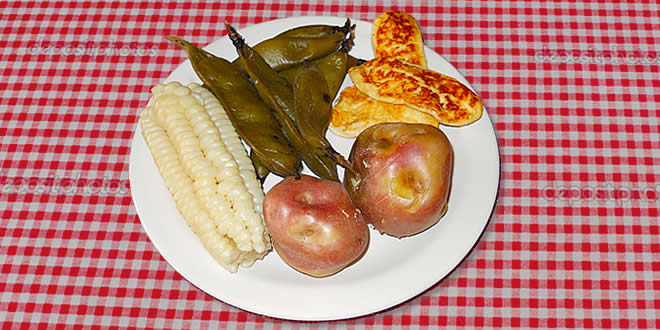
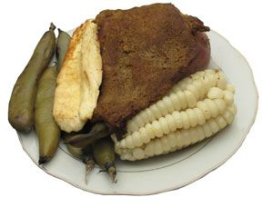
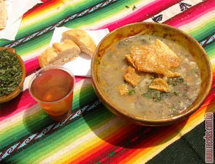
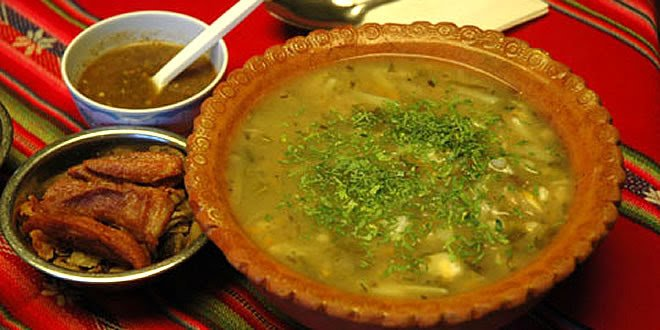

Examen de Nehemias Corine Abalos

Platos Tipicos del Departamento de La Paz
| Nombre | ingredientes |
|---|---|
| Plato Paceño | choclo, papa, haba |
| Plato de papalisa | Papa, alverja, haba |
| Plato de papalisa | Papa, alverja, haba |
| Fricase | Carne, Mote, Chuño |
Himno a La Paz
¡Oh! linda La Paz,
oh bella cuidad,
quien te conoce no te olvida jamas.
PLATO PACEÑO


PLATO DE PAPALISA

PLATO DE CHAIRO